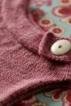
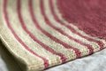

|
||
Premium Patterns Wintry Mix Mitts Love Bytes HawkeyeFree Patterns Kiddie Cadet Summerlin Ruffled Scarf Seamless DS Sock Simply Seamless Pouch Myriads of MushroomsExtras DIY Mitten Blocker Felt Patch Tutorial Yarn Dyeing Tutorial Needle Pouches Knitting Journal |
March 23, 2011 - Posted by Grace SchneblyProud to be NeighborlyProject Specs This adorable top has been in my Ravelry favorites for ages. My niece's birthday is coming up (it seems like a birthday is always coming up nowadays!), and was really excited for the opportunity to finally knit this top. I don't know why I feel like I need to wait for birthdays or special occasions to knit some things. I definitely need to get out of that mindset and just make whatever I want, whenever I want, for whomever I want! This is especially the case with children's clothes since they grow so quickly! Seriously there are just too many knits and not enough time (especially for a lazy knitter like myself). The neighborly pattern is great, and there are so many cute mods and versions that other knitters have shared on Ravelry. Looking through all of the projects was a great source of inspiration. The construction is quite simple for such a darling top. You start by knitting the collar flat (I slipped the first stitch on each for of the collar for a clean edge), then pick up stitches to knit the body. Since the overlapping flap of the collar and button are don't serve any purpose other than to look adorable, I wanted to make sure that the button wouldn't slip out on accident. Just to be sure, I knit the button hole a little smaller than what was written in the pattern as follows: Button hole row 1: k3, bo4, k3 When picking up stitches for the body I went kind of willy nilly and didn't count until I had picked up around the entire collar. I ended up with 2 extra stitches on my needles, so to get back to the proper number I just k2tog one over each shoulder on the next round. This pattern is very forgiving, so don't be too concerned if you pick up a few extra stitches or knit the collar a few rows too long. I had originally planned on using Damask for the entire top, but once I got to the lower bodice it just seemed like too much pink. I ended up working graded stripes in natural which turned out pretty cute and makes it feel really girly. I started with 2 rows of Natural, then 2 rows of Damask, then 3 rows of Natural, then 2 rows of Damask, continuing in that manner until ended with 7 rows of Natural for the final stripe. After the turning row I knit an additional 7 rows in Natural to make sure the entire bottom stripe would be part of the turned hem. The knitting goes quite fast since there is very little shaping or seaming. I also opted to leave out the ribbing around the arm holes so that saved some time in the end as well. This pattern is free, but I really like Jennifer's concept behind the design about being neighborly. She urges anyone who knits this pattern to make a donation to a charity of their choice or make two and donate one. The thought behind this pattern makes you feel great about knitting. I made a donation Unicef to help support the needs of children affected by the earthquake and tsunami in Japan (100% of the donations go to Japan). If you would like to donate, check out the Google Crisis Response page for the 2011 Japan earthquake and Tsunami. They have links to several charities, including the Japanese Red Cross, so donating is easy. |
   Recent ReviewsRecent Posts
 Our Favorites
|
| © 2007 KathrynIvy.com | ||
{kind=link}
{kind=link}